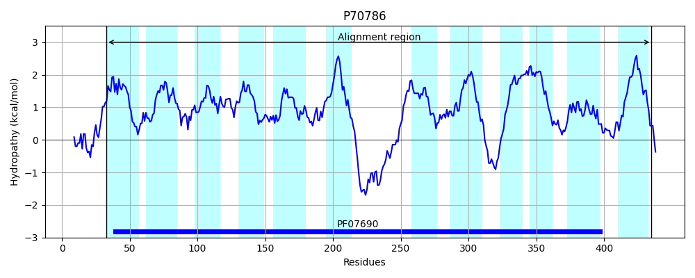
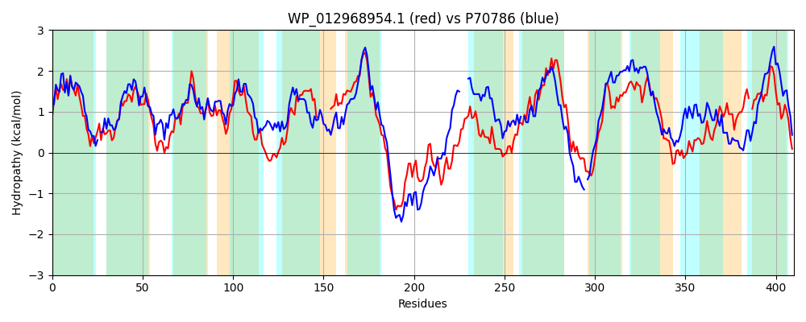

Hit Accession: P70786
Hit TCID: 2.A.1.14.3
Hit Description: gnl|BL_ORD_ID|11301 gnl|TC-DB|P70786|2.A.1.14.3 Putative tartrate transporter - Agrobacterium vitis.
Mach Len: 410
e:0.000000
Query TMS Count : 12
Hit TMS Count: 12
TMS-Overlap Score: 11.350000
Predicted Substrates:CHEBI:35396;tartrate
BLAST Alignment:
Score: 549 , Bit scores: 216 bits, E-value: 1.9e-65, Alignment length: 410, Percentage identity: 32
Query: 12 RIIVPVLIACIMSFMDRVNISFALPGGMEADLGITSQMAGVASGIFFIGYLFLQIPGGRIAVNGSGKKFIAWSLVAWAIVSVATGFVTHQYQLLVLRFILGVSEGGMLPVVLTMVSNWFPEKELGRANAFVMMFAPLGGMLTAPVSGA------IIAALDWRWLFIIEGLLSLVVLVVWWFMISDRPQEAHWLPARERDYLVTTLAAERAAKQAEAPVSKAPVKDVFGNAGLMKLVILNFFYQTGDYGYTLWLPTILKGLTGGNMASVGFLAVLPFVATLAGIYVISLFSDHSGKRRLWVRFSLYSFAAALVASVVLRDQMVAAYIALVICGFFLKSATSPFWSMPGRIASPEVAGSARGVINGLGNLGGFCGPYLVGVMMYLYGQ-NVAVCALAGSLIIAGTMTFLLPK 414
RI+ +++ ++F+DRVNI FA M DLG +S + G+ +GIFF+GY ++P I + +IA ++ W IVS FV +LRF+LGV+E G P ++ +S WFP + A M APL +L +P+SGA ++ W+W+F+IE +L++ VV F ++DRP++A WL ER++LV T+ AE+A + + A + D+ ++ L ++ F G Y +W P I+K G + VGF+ +P + + + + + SD +G+ R W AAA +A + IAL I + + P WSMP S A + IN +GNLGGF GP ++G + G + +AG L+I+ +T +L +
Sbjct: 33 RIVPFIMLLYFIAFLDRVNIGFAALT-MNQDLGFSSTVFGIGAGIFFVGYFLFEVPSNLILNKVGARIWIARVMITWGIVSGLMAFVQGTTSFYILRFLLGVAEAGFFPGIILYLSFWFPARRRAAVTALFMAAAPLSTVLGSPISGALMEMHGLMGLAGWQWMFLIEAAPALILGVVVLFFLTDRPEKAKWLTEEERNWLVKTMNAEQAGRGTASHSVMAGLADI----RVIALALVYFGTSAGLYTLGIWAPQIIKQF-GLSAIEVGFINAVPGIFAVVAMVLWARHSDRTGE-RTWHVVGACLLAAAGLAFAAGATSVFMVLIALTIVNVGISCSKPPLWSMPTMFLSGPAAAAGIATINSIGNLGGFVGPSMIGWIKDTTGSFTGGLYFVAGLLLISAILTLILAR 435 | Protein Hydropathy Plots: |
|---|
 |  |
Pairwise Alignment-Hydropathy Plot:
|
|---|
|  |